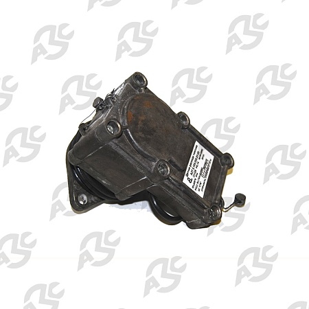

Датчик расхода топлива Нара 27,28-3 с сумматором
ЗАО "НАРА" - Эдан Инжиниринг
Раздел: Импульсные датчики · АЗС
Цена и наличие — по запросу. Поставляем оригинал и аналоги. Доставка по России.
Описание
Датчик расхода топлива Нара 27,28-3 с сумматором производства ЗАО "НАРА" - Эдан Инжиниринг — позиция из раздела «Импульсные датчики» для АЗС. Компания SYNDICAT поставляет оборудование и комплектующие для автозаправочных и газозаправочных станций по всей России. Цена и наличие «Датчик расхода топлива Нара 27,28-3 с сумматором» — по запросу: оставьте заявку или позвоните, подберём оригинал или аналог и рассчитаем доставку.